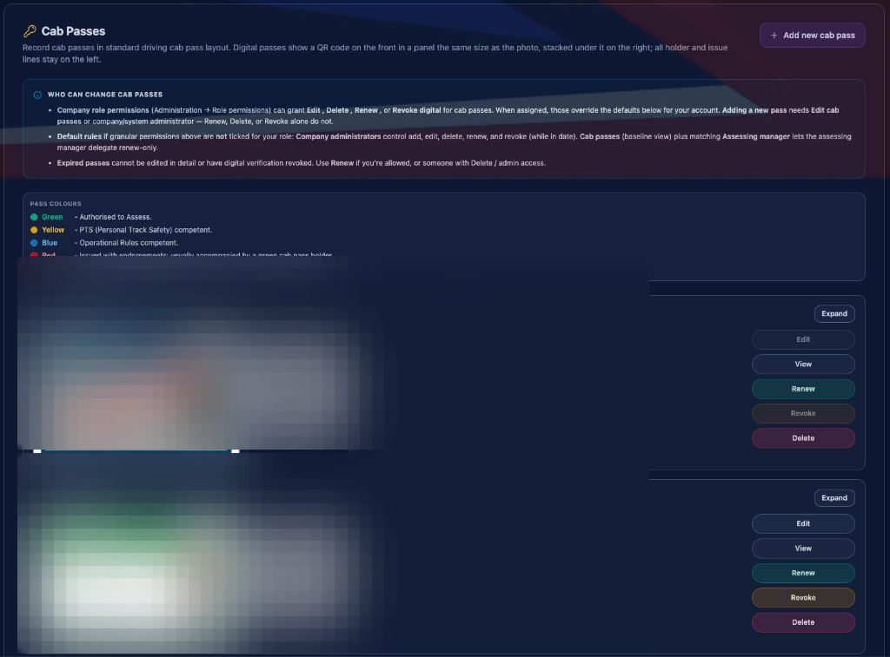

01
Passes on the employee record
Issued passes sit under Cab Passes with colour status, QR verification and renew / revoke controls.

Cab authority is held on the employee record as a standard driving cab pass. Issue a digital pass and a QR code appears beside the photo — scan it to open the live pass in a browser with no sign-in.
Cab passes live on the employee record in standard driving cab pass layout. Choose a colour, complete the issue form, and save a digital pass with a QR anyone can scan — no sign-in required.
These capabilities are part of core Rail Intel, gated only by the permissions you assign. Optional modules extend them further.